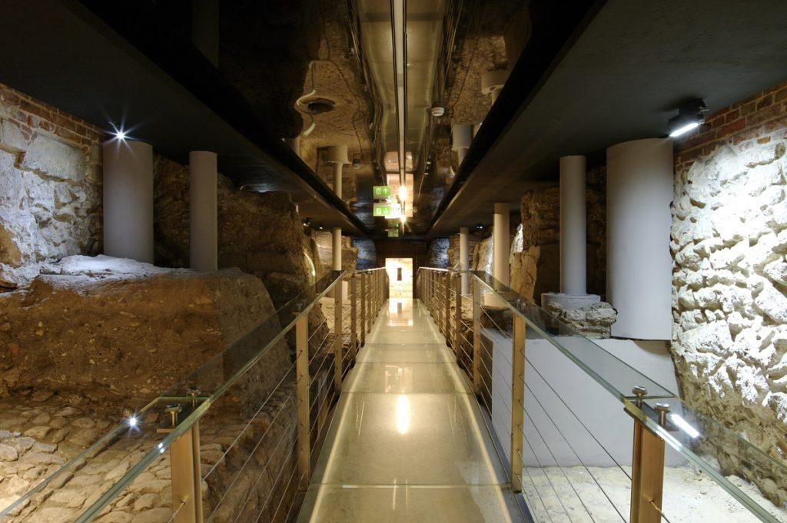

01 / UNDERGROUNDRynek Underground
Discover medieval Kraków beneath the Main Market Square.
Beneath the busy Main Market Square lies a remarkably preserved fragment of the medieval city. This visit takes you below today's street level to explore archaeological remains, former market spaces and traces of everyday life. We will look at how archaeologists read these discoveries and what they reveal about the people who lived, worked and traded here.
What you will discover
- The archaeological remains of the medieval market
- How the square and surrounding city changed over time
- Everyday life, trade and the material evidence left behind